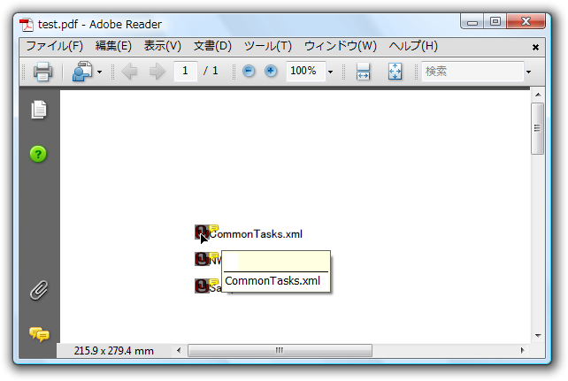

全て展開
全て展開 すべて折りたたむ
すべて折りたたむPDF ファイルに添付ファイルを追加する機能は便利なことがよくあります。添付ファイルは、詳細情報のスプレッドシートや、マルチメディア（ムービー、サウンド、サンプルコードなど）といったあらゆる種類のファイルを含むことができます。
ファイル添付を C1Pdf ドキュメントに追加するのは簡単です。行う操作は、 AddAttachment メソッドを呼び出し、添付するファイル、添付ファイルを含むページの領域、およびオプションとして、添付ファイルの外観を指定するだけです。
添付ファイルはアイコンとして表示されます（アイコンは、AttachmentIconEnum 列挙体内の４つの定義済みのアイコンの中から選択でき、アイコンの色を選択することもできます）。ユーザーが添付ファイルトの上にマウスを移動させると、ファイル名が表示され、カーソルが切り替わって使用可能な添付ファイルが存在することを示します。これでユーザーは、マウスを右クリックして添付ファイルを開いたり、添付ファイルをファイルに保存したりできます。
たとえば以下のコードでは、指定したディレクトリ内の全ファイルを PDF ドキュメントに添付します.
Visual Basic コードの書き方
| Visual Basic |
コードのコピー
|
|---|---|
Dim rect As New RectangleF(100, 100, 60, 10)
Dim font As New Font("MS UI Gothic", 9)
'いくつかのファイルを添付します。
Dim path As String = "c:\temp\files"
Dim file As String
For Each file In System.IO.Directory.GetFiles(path)
Dim width As Single = rect.Width
rect.Width = rect.Height
_c1PdfDocument1.FillRectangle(Brushes.Gray, rect)
_c1PdfDocument1.AddAttachment(file, rect)
rect.Width = width
rect.X += rect.Height
_c1PdfDocument1.DrawString(System.IO.Path.GetFileName(file), font, Brushes.Black, rect)
rect.X -= rect.Height
rect.Y += 2 * rect.Height
Next file
|
|
C# コードの書き方
| C# |
コードのコピー
|
|---|---|
RectangleF rect = new RectangleF(100, 100, 60, 10);
Font font = new Font("MS UI Gothic", 9);
//いくつかのファイルを添付します。
string path = @"c:\temp\files";
string[] files = System.IO.Directory.GetFiles(path);
foreach (string file in files)
{
float width = rect.Width;
rect.Width = rect.Height;
_c1PdfDocument1.FillRectangle(Brushes.Gray, rect)
_c1PdfDocument1.AddAttachment(file, rect);
rect.Width = width;
rect.X += rect.Height;
_c1PdfDocument1.DrawString(System.IO.Path.GetFileName(file), font, Brushes.Black, rect);
rect.X -= rect.Height;
rect.Y += 2 * rect.Height;
}
|
|
 このトピックの作業結果
このトピックの作業結果
添付ファイルはアイコン（AttachmentIconEnum 内の４つの定義済みアイコンから選択できアイコンの色も選択可能）として表示されます。ユーザーがマウスを添付ファイル上に移動すると、ファイル名が表示されカーソルが変化して、使用可能な添付ファイルが存在することを示します。ユーザーは添付ファイル名を右クリックし、添付ファイルを開くか、それをファイルに保存できます.